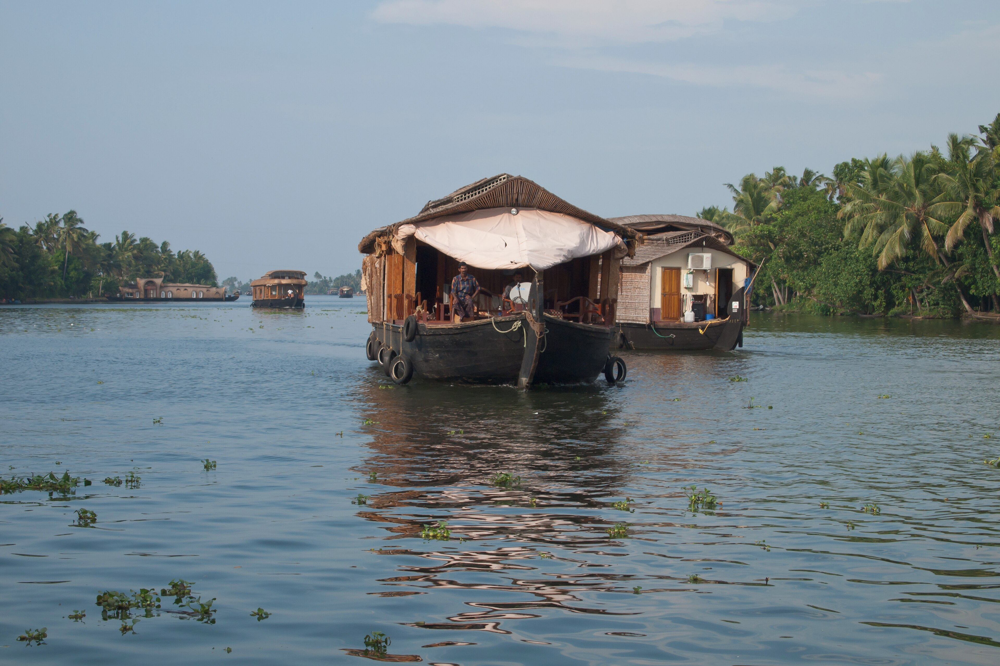
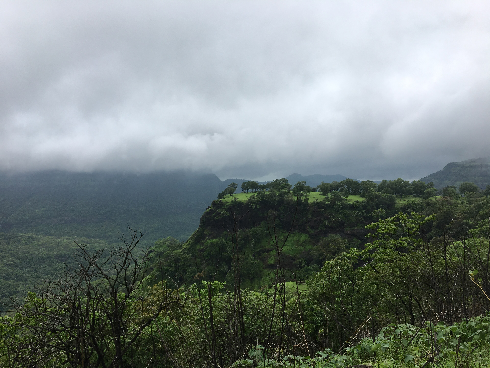
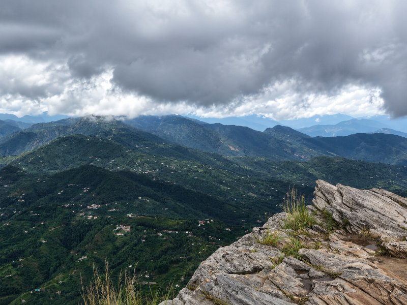
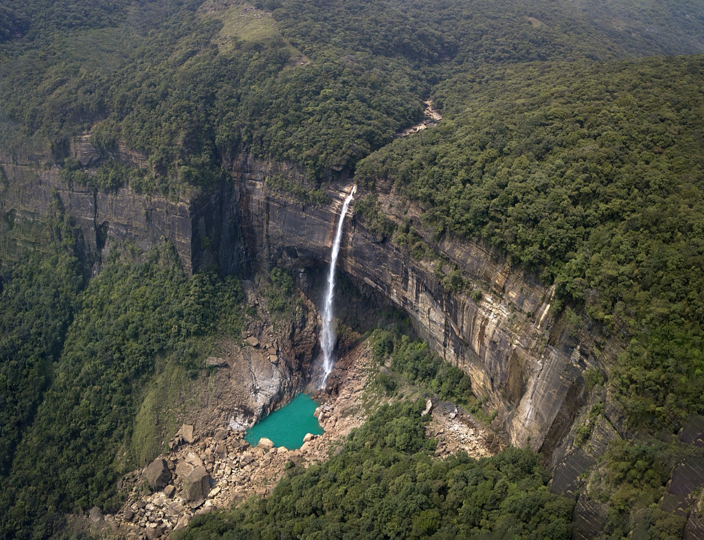
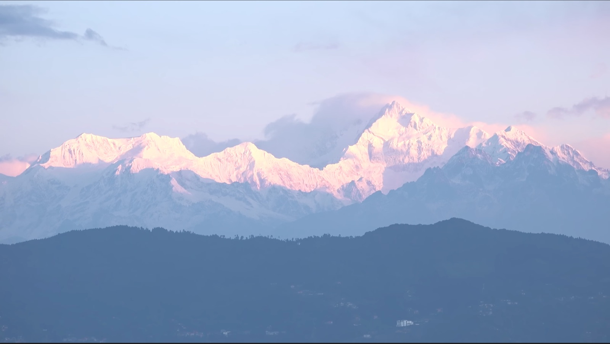
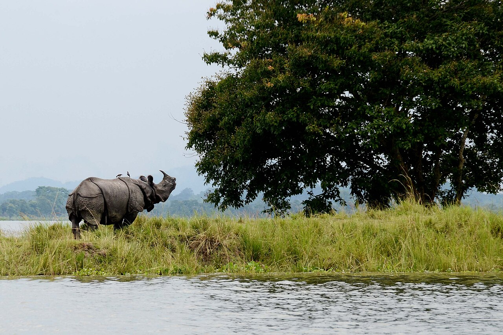
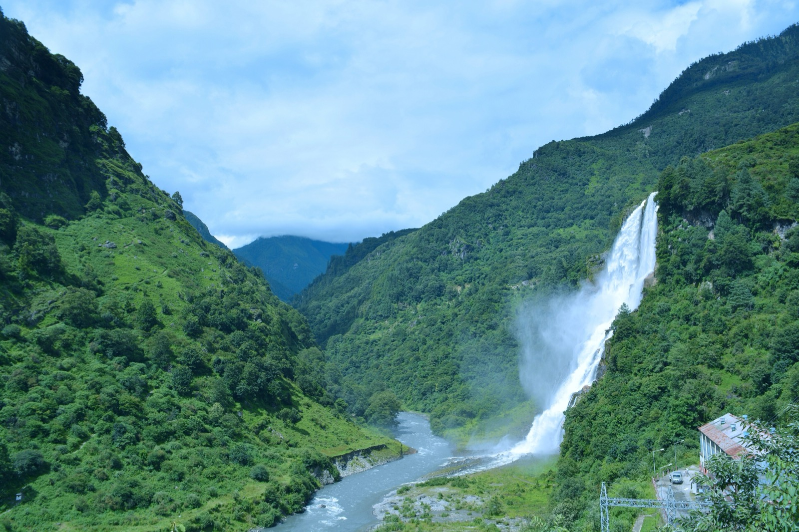
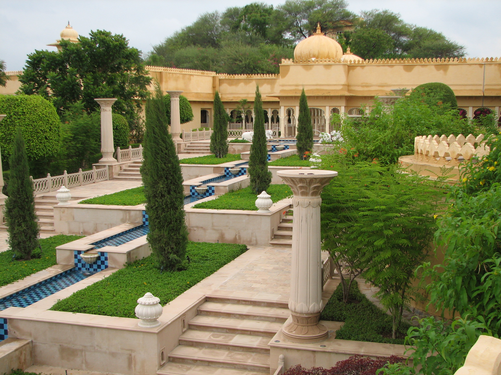

Skyline Travel Planner
Your India,in the orderyou want it.
Every trip we plan begins as an empty column and fills in one day at a time. This is one of them, being written as you go.
The coast, first
Three to five days on the Arabian Sea. From ₹9,999 per person, with three, four and five star stays priced separately.

Then the river
The old ghats at the hour they are actually used, which is early. We build the day around that, not around the coach.
Agra, briefly
Two to three days, from ₹9,000 per person. Long enough to see it twice, in two different lights.

And then the road runs out of country.

Day seven
You are very smalland it is very quiet.
Five to six days in the valley, from ₹22,000 per person. One boat, one lake, and the part of the trip nobody writes down afterwards because there is nothing to write.

Nineteen routes, not one
That was a sample. Here is the rest of the map.







How the column gets written
- OneYou pick a directionA place, or just a month and a rough idea.
- TwoYou tell us the awkward partsDates, how many of you, who does not walk far, what the budget really is.
- ThreeWe send the column back filled inA day by day itinerary and a quotation, with hotel tiers priced separately.
- FourYou change itMost people do. That is the point of it being a column and not a brochure.
Back where you started
You have just watched one get written. Yours takes about a day, costs nothing to ask for, and starts with a message on WhatsApp.
Prices shown are indicative starting-from estimates per person and can change with season, hotel availability and current rates. This page is a sample build and is not the live Skyline site, which is at skylinetravelplanner.com.